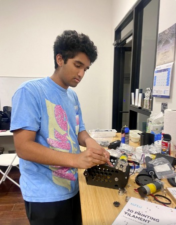
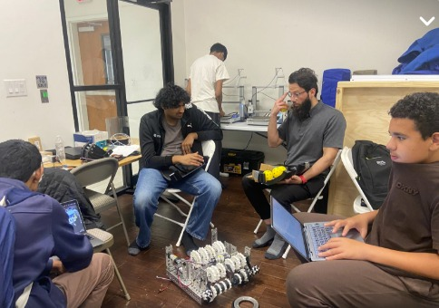
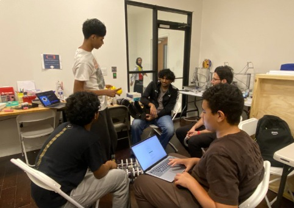
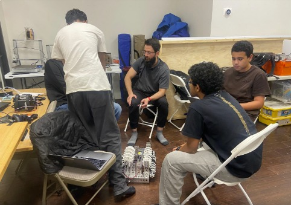
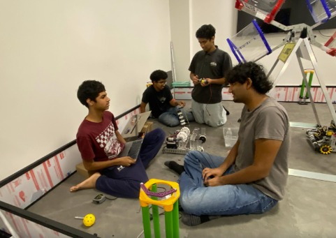
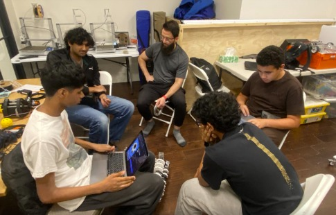
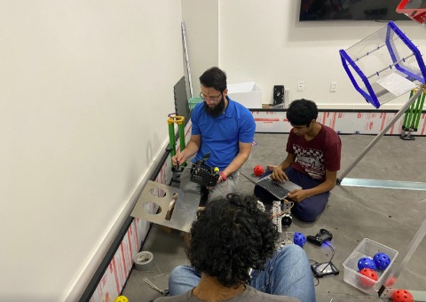
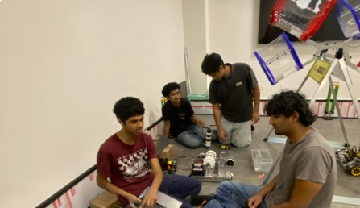
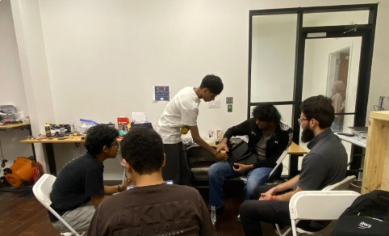
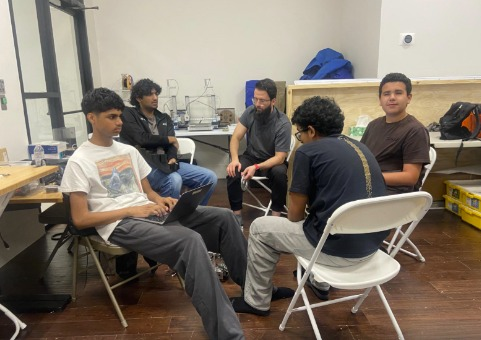

Team photos





















DECODE · 2025–26
Rookie season
We competed as ICBC-Qur’antum Mechanics in our first season.
- Sustain Award
- Central X-Stream League Tournament · January 2026
- Compass Award
- Central Texas Regional Championship · March 2026
- 3rd of 24 teams
- Aero Division qualifications at the regional championship · March 2026